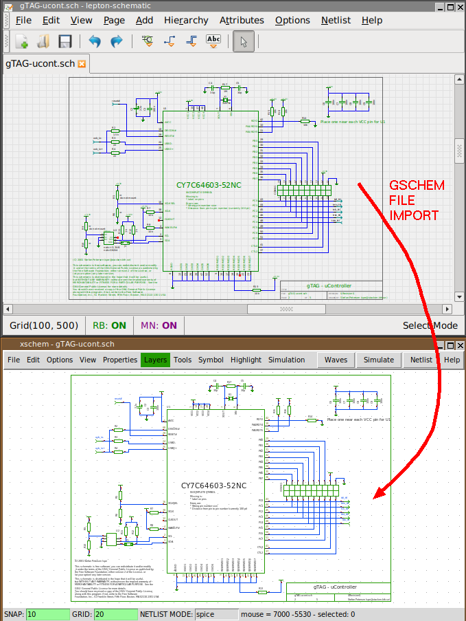

PREV
UP
NEXT
ROADMAP
- Contribute to a Free silicon EDA ecosystem.
- Integration (Forward, Backward annotation) with backend tools (Klayout).
- Input filters for more schematic formats as done for GSCHEM / Lepton-Eda.
- Native Windows port.
- Other improvements driven by user feedback. Your feedback is Welcome!
